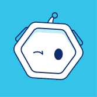
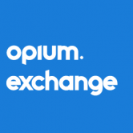
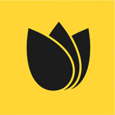

QuickSwap QuickSwap 是基于以太坊的无许可去中心化交易所 (DEX)，由 Matic Network 的第 2 层可扩展性基础设施提供支持。通过利用第 2 层进行交易，QuickSwap 用户将能够
QuipuSwap QuipuSwap 是一个开源协议，为基于 Tezos 的代币和 XTZ 的无缝去中心化交换提供接口。利用 Tezos 协议的优势，例如流动性 XTZ 委托，流动性提供者可以从交换费和面包师奖励中获
 PolyDEX PolyDEX 是 Polygon Network 上最新的 AMM。它旨在成为支持多链IDO和IFO的首选平台。在 PolyDEX 上启动的项目将受益于广泛的服务，包括 Staking Pools、Trading Ba
Polyient DEX Polyient DEX (PG DEX) 是 Polyient Games 生态系统的官方去中心化交易所。 Polyient DEX 的 V1 是 Uniswap V2 的分叉，是最大的 Polyient Games Governance Token (PGT) 流动性池的所在地。PGT 持有者通过从领先的区块链游戏、N
PinkSwap PinkSwap 是一个去中心化交易所，用于将 BEP-20 代币换成 PinkArmy。PinkSwap 使用自动做市商 (AMM) 模型。这意味着虽然你可以在平台上交易数字资产，但没
Power Stake Community Platform 什么是 Power Stake 社区平台？ Powerstake 社区平台是一个基于交易量的股息赚取交易所，通过买卖交易量向所有 POWER 代币持有者支付 20% 的股息。股息会立即在以太坊中支付，并且
RoboCoin Exchange 分步指南 RoboCoinEX将向1,000 名 幸运参与者赠送总计 10,000,000 美元RCX 代币（约 100,000 美元） 。注册赠品并完成简单的任务以获得参赛作品。 1-通过
 Opium Exchange Opium Exchange 是一个开放的、非托管的去中心化衍生品交易平台。我们之前为 ETH 期货、天然气期权、即将推出的 DeFi 代币的合成预市场、信用违约掉期、利率掉期和二元期
ReBa Swap ReBa 代币是 Bitcoinauto Galaxy 的核心。 ReBa 代币是作为一种服务代币创建的，用于访问加密货币和其他项目提案的赚取服务。 添加流动性，发送到农场Bitcoinauto并
Ref Finance Ref 充分利用了 NEAR 的低费用（每次交换 0.005 美元）、一到两秒的确定性和基于 WebAssembly 的运行时（你好，Rust 智能合约！）。 使用最近推出的彩虹桥（NEAR <> ET
token.store EOS token.store EOS 是第一个完全无需信任的基于 EOS 代币的去中心化交易所。 token.store EOS 提供完全链上交易体验，所有交易都由经过审计的智能合约促进，从而消除了其他 EOS “DEX
token.store ETH 什么是 token.store ETH？ token.store ETH 自 2017 年开始运营，是以太坊网络上最古老、完全无需信任的去中心化交易所之一。 所有资金都保存在一个开放的智能合约上（而不是由交
TokenGoodies Exchange 什么是 TokenGoodies 交易所？ 推出首个此类交易所，用户可以在其中交易（购买/出售）能源。 买家将能够以低于销毁 TRX 的成本购买能源，卖家将收到 TRX 支付，以换取将其
Tokenlon 打开 imToken 或 Tokenlon.im 并点击“市场”在 Tokenlon DEX 上交易。 Tokenlon 是一个去中心化的交易所，具有链下限价单和基于 0x 的链上结算以及来自 Uniswap 和 Curve 等其他 DEX 的聚合量。 其模块化设计
KLAYswap KLAYswap 是一个完整的链上即时交换协议，与链上流动性池一起运行，流动性由自动做市 (AMM) 机制保证。它是一种链上交换服务，允许任何拥有任何 KLAY 或 KCT 类型的代币加
TRON JOYSO TRON 网络上的混合去中心化交易所📢📢TRC 代币列表：@LiveCrazydogs 的 $DOG，@TronVegasOnline 的 $VOCIN 立即在 TRON JOYSO 上游戏
TTSwap TTSwap 是基于 Uniswap 和 Vitalik 的想法启发的自动做市（AMM）模型的去中心化交易所（DEX），由第三方开发者构建。 这种 AMM 模型的最大特点是流动性池是完全自动化的
Uniswap V1 Uniswap 是一种在以太坊上进行自动令牌交换的协议。 Uniswap 协议在设计时考虑到了简单性，为在以太坊上无缝交换 ERC20 代币提供了一个接口。通过消除不必要的租金提取和
ValleySwap ValleySwap 是 Oasis Emerald paratime 上最大、增长最快的去中心化交易所，包括流动性农业、掉期和 IFO 等功能。 Valleyswap 遵循非托管、点对点、自动化做市商模式。我们的目标是提供快速、安
Versa 什么是 Versa 金融？ Versa Finance 是我们计划在不久的将来发布的整个 dApp 生态系统的基础。我们的目标是构建一个面向用户体验的 dApp 工具系列，对新用户和高级用户都应该是
VIPS FINSTOCK VIPS Finstock 始于年轻加密爱好者的梦想，于 2021 年变为现实。我们决定推出一个用户可以完全信任和依赖的交易平台和实用代币。我们对数字资产和区块链技术是未来的
WanSwap Wanswap 是一个基于 Wanchain 区块链的去中心化跨链 AMM DEX。除了交换代币和提供流动性外，WanSwap 还具有农业和 Staking 功能。它充分利用了 Wanchain 的跨链特性，以便使用
WaultSwap Wault Finance 是一个去中心化金融中心，计划在币安智能链上的一个简单生态系统中连接所有主要的 DeFi 用例。我们相信 DeFi 的好处应该以直观的方式为大众所接受；避免了
WhaleEx WhaleEx 是世界上最大的去中心化交易所。我们立志成为流动性最高的交易所。 WhaleEx 提供安全的资产托管、零交易费用和即时提款，提供用户友好的体验。 WhaleEx 是交易加密
WhaleSwap WhaleSwap 是下一代 DEX，通过其创新的混合流动性池最大限度地提高资本效率和收益。 Whaleswap 是一个无摩擦的去中心化收益再分配 Defi 智能合约。被动收入完全由持有者无
XSwap Protocol XSwap 协议是 XDC 网络中的第一个 AMM 和 DEX，它允许在安全平台上交易 XRC20 代币。 XSP 是项目的原生代币。它将用于： 质押和农业奖励。 在治理平台上投票。 如今，大多
 Ontology DEX (SEED Exchange) 什么是 本体 DEX（SEED 交易所）？ Sesameseed 的 Ontology DEX - 提供 Ontology 原生币、OEP4 代币和 OEP 5 ,8 NFT 代币 DEX 交易服务。(网页无法显示)
SatoroSwap 什么是 SatoroSwap ？ SatoroSwap 是在币安智能链 (BSC) 上运行的去中心化交易所和收益农业 我们是一个社区运行的项目，将由社区投票管理协议的所有重大更改。（投票将很快部署。
SilverLineSwap 去中心化交易所提供最流畅的点对点交易体验，安全是我们的核心理念。 SilverLineSwap 允许用户通过几次简单的点击交易币安智能链上的任何代币，并拥有自己的私人 SilverLineSwap 仪
Sloth Finance SlothFinance 是币安智能链 (BSC) 上的去中心化交易所 (DEX)。“$Sleepy Sloth 是一项环保慈善无摩擦收益农业协议，旨在激励 $Sleepy Sloth 持有其销毁和重新分配机制。每笔
SunSwap SunSwap 是一种基于 TRON 的交易协议，用于 TRC20 代币之间的交易。根据系统价格，任何两个 TRC20 代币之间都可以轻松进行转换。收取的所有交易费用将直接流向协议的流动性

，由 Matic Network 的第 2 层可扩展性基础设施提供支持。通过利用第 2 层进行交易，QuickSwap 用户将能够以接近零的 gas 成本以闪电般的速度交易任何 ERC20 资产。")


 平台。")


 和 Real State 使用 $WE 的费用为 0%。")


 上运行的去中心化交易所和收益农业.")